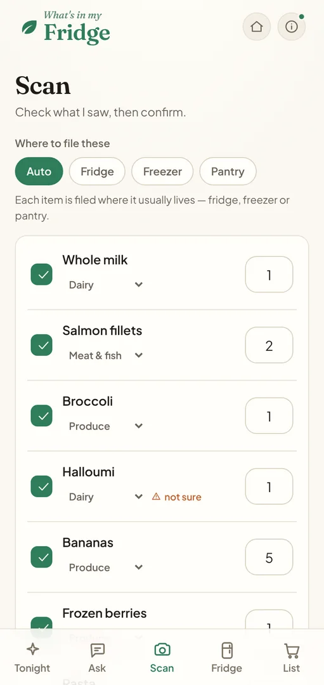

An app that knows what’s in the fridge.
My own app: snap your shopping, use what’s going off, cook from what’s in.


Made for a quick look.

From the shop to dinner.
Snap your shopping.
A photo does the typing
Where to file these
Each item is filed where it usually lives: fridge, freezer or pantry.
Read the receipt.
Shorthand in, real names out
Use it up first.
Amber soon, red past it
- Mushrooms
- Spinach
- Chicken thighs · 6
- Cheddar
Never run out.
Your usuals, back on the list
You normally keep these, but none are in stock.
My list
0 ticked off
Dinner from what’s there.
Real meals from what’s in
Creamy chicken and spinach
Pan-fried thighs in a yoghurt and garlic sauce, with the spinach wilted in at the end. On the table in 30 minutes.
Uses: Chicken thighs, Spinach, Greek yoghurt
Get the app on your phone.
Open it on your phone, then add it to your home screen in three taps. It works in Safari or Chrome on iPhone, and Chrome on Android.
On a computer? Point your phone’s camera at the code to open it there.
The small details.
Warm paper and a fresh green.
What’s for dinner?
Fraunces · 500 italic, 600Use by Tomorrow
Plus Jakarta Sans · 400 to 700Other projects you might like.


Let’s make something people like to use.
Tell me a bit about your business and what you need. I usually reply within a working day.
jb.designagency89@gmail.com